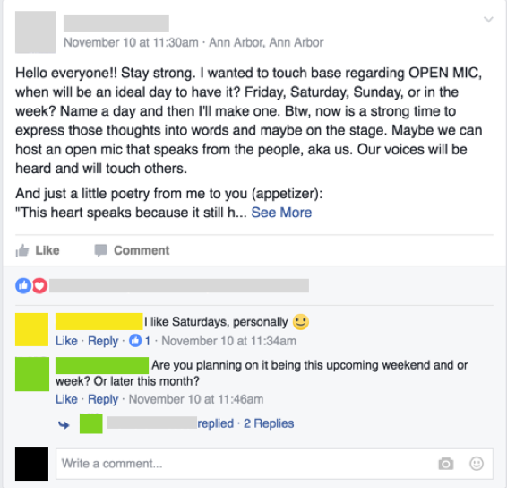

munger events
Facilitating transdisciplinary collaboration and innovation at the Munger Graduate Residences.

Role: Interaction Designer, UX Researcher
Project Type: Individual project for SI 582: Introduction to Interaction Design at the University of Michigan in conjunction with my position as Coleman-Munger Fellow
Timeline: September – December 2016
Software: Sketch, Invision
Methods: Competitive Analysis, Sketching, Personas, Scenarios, Paper Prototyping, Usability Testing, Digital Prototyping
the community

The Munger Graduate Residences is a transdisciplinary community for graduate and professional students from all 19 schools at the University of Michigan. As a Coleman-Munger Fellow, I lead residents in developing programs and events that encourage collaboration and innovation across disciplines.
Munger has only been open since Fall 2015, which means we, the staff, are continually developing and interating on our workflows to be more efficient and transparent to residents.
the opportunity
In conversations with staff and residents, several types of questions about events and programming at Munger often tend to surface. These same themes were consistent with recurring questions posted on the Munger Facebook group, which I’ve grouped as follows:
1. What’s going on tonight?
Because there is no central resource for residents to view or learn more about events going on in the building at any given time, they are often unsure whether certain events are closed/private functions, or whether they are open to all residents.
2. How can I share my event with the community?
The Munger Facebook group is currently the widest platform residents can use to promote their programs. However, not every resident is a member of the group, and users have experienced difficulties utilizing Facebook events as a central resource for community event sharing.
3. Will anyone attend my event?
As a new community, Munger collectively has a limited amount of data and experience to consult when considering whether there is enough resident interest in a program idea, or which dates and times would best meet the needs of a diverse group of students with busy schedules.
goals
- Demystify program creation
- Create a more inclusive community
- Empower community members pursue their ideas collaboratively
methods
After conducting preliminary research, I developed personas, sketched scenarios, and constructed paper prototypes of possible solutions.
By testing the paper prototypes with target users, I was able to better identify the priorities of residents and iteratively improve on the design.
the solution
Please explore the digital prototype below!
My digital prototype demonstrates several key features of the platform. Users can:
- create, promote, and manage the logistical details about their events, allowing them to inform their guests easily and quickly of any last-minute changes (room, date, time, etc).
- view the guest list of interested residents before the event, to better prepare for food ordering or further promotion.
- provide feedback on the events they’ve hosted or attended in order to gather more data on the best dates, times, and locations for certain types of events. This will facilitate future event planning decisions.
- share events they are interested in attending with their friends, which can then be added to the user’s main calendar.
takeaways
Some important considerations as I move forward include possibly integrating Munger Events with other social networking or productivity platforms to provide users with more flexibility and to gain wider adoption. I plan to further test:
- Is an internal calendar optimal, or should users be able to sync events with other calendar services?
- Should event sharing be limited to internal use only, or are there avenues by which events could be shared through email, text, or other messaging applications?
Overall, this process has led me to consider the differences in designing platforms that are meant to share and promote events widely- through large cities, for example- and those tailored for the needs of smaller communities.